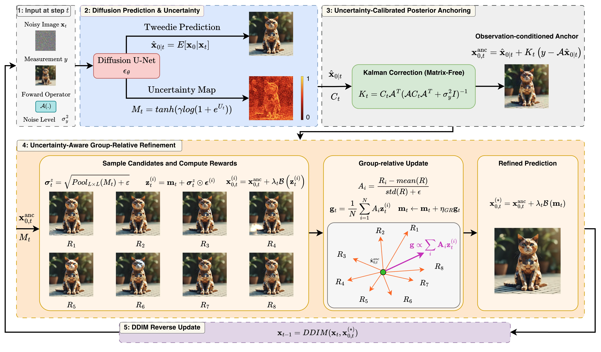
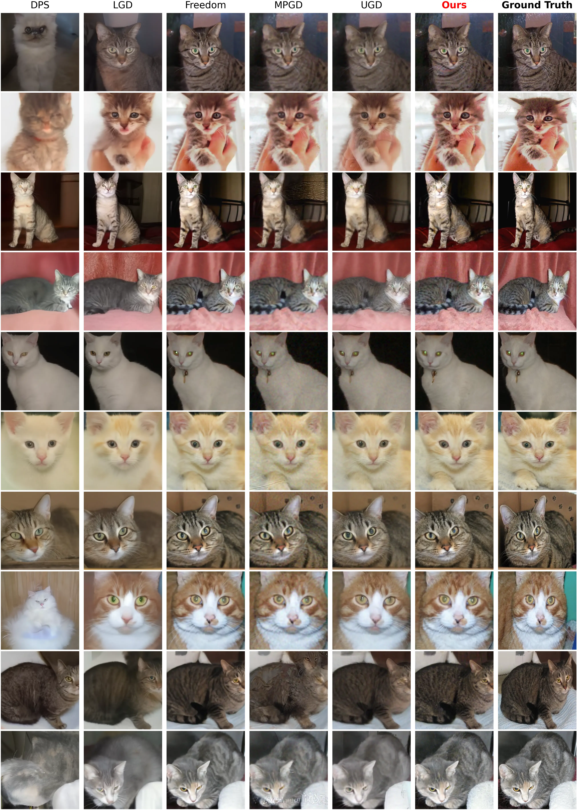
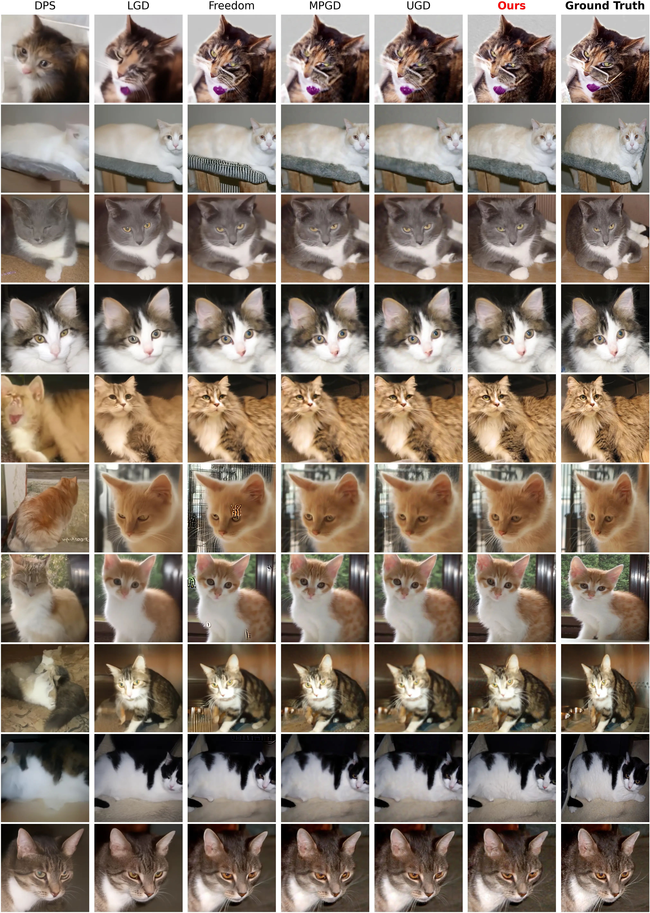

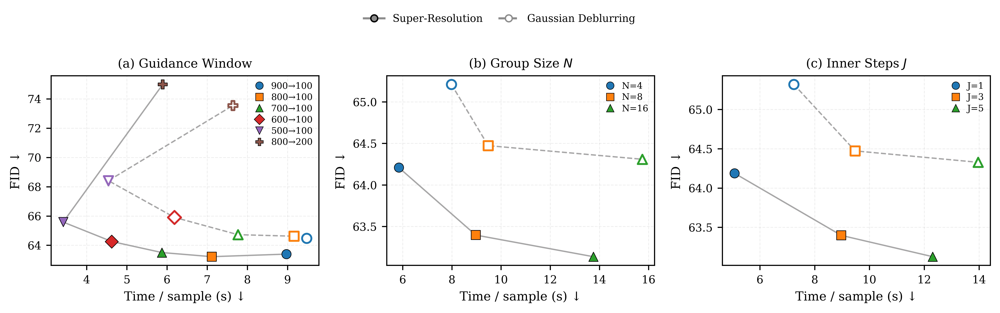
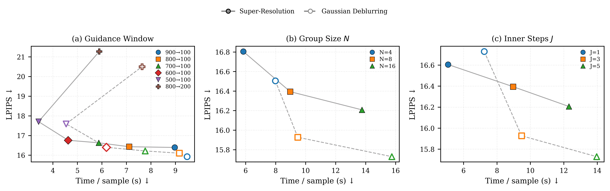

1
Diffusion Prediction & Uncertainty
Estimates the Tweedie clean prediction together with spatial uncertainty from second-order diffusion information, capturing the reliability of different image regions during reverse diffusion.
Diffusion models provide strong priors for inverse problems, yet many training-free solvers treat the intermediate Tweedie clean prediction primarily as a point estimate, leaving its spatial reliability underexploited. Furthermore, measurement fidelity alone may be insufficient to resolve ambiguities introduced by information-losing operators. To address these limitations, we propose a training-free framework that uses diffusion uncertainty for two complementary purposes: observation conditioning and adaptive refinement. At each reverse step, we estimate spatial uncertainty from second-order Tweedie information using Hutchinson-JVP. Together with the Tweedie mean, this defines a local Gaussian belief from which we derive an uncertainty-calibrated posterior anchor. The anchor adapts observation correction to the reliability of the current prediction. Starting from this anchor, we perform uncertainty-aware group-relative refinement in a low-dimensional search space, where the same uncertainty controls exploration and a reward combining measurement fidelity and no-reference image quality favors better samples. The refinement requires no reward-gradient backpropagation, and all pretrained models remain frozen. Experiments on Gaussian deblurring and super-resolution achieve the best FID and LPIPS among the compared training-free baselines. On super-resolution, our method improves FID and LPIPS by 9.6% and 16.1%, respectively, over the strongest competing baseline, while on Gaussian deblurring the corresponding improvements are 2.2% and 11.3%. It also requires substantially less peak memory than most guidance-based methods.

Estimates the Tweedie clean prediction together with spatial uncertainty from second-order diffusion information, capturing the reliability of different image regions during reverse diffusion.
Combines the Tweedie prediction, spatial uncertainty, and observation through Gaussian conditioning to construct a measurement-informed anchor with uncertainty-adaptive correction.
Explores candidate variations around the posterior anchor using uncertainty-adaptive sampling and group-relative rewards, refining ambiguous regions without backpropagation through the denoiser or reward model.
Visual comparisons with representative training-free baselines across two inverse imaging tasks.


We evaluate reconstruction quality and computational efficiency on Super-Resolution and Gaussian Deblurring. Lower values are better for all reported metrics.
| Method | FID ↓ | LPIPS ↓ | Peak Mem. (GB) ↓ |
|---|---|---|---|
| DPS | 121.422 ± 1.519 | 42.149 ± 0.313 | 2.513 ± 0.002 |
| LGD | 111.665 ± 0.617 | 37.429 ± 0.283 | 2.526 ± 0.002 |
| FreeDoM | 70.127 ± 1.533 | 19.535 ± 0.395 | 2.511 ± 0.001 |
| MPGD | 89.452 ± 1.122 | 28.362 ± 0.337 | 0.786 ± 0.001 |
| UGD | 87.487 ± 0.751 | 27.380 ± 0.150 | 2.511 ± 0.002 |
| Ours | 63.397 ± 0.746 | 16.394 ± 0.132 | 1.073 ± 0.001 |
| Method | FID ↓ | LPIPS ↓ | Peak Mem. (GB) ↓ |
|---|---|---|---|
| DPS | 112.578 ± 1.438 | 39.214 ± 0.130 | 2.512 ± 0.002 |
| LGD | 91.040 ± 0.291 | 27.487 ± 0.206 | 2.526 ± 0.002 |
| FreeDoM | 85.245 ± 0.828 | 23.948 ± 0.731 | 2.513 ± 0.001 |
| MPGD | 65.907 ± 0.909 | 17.948 ± 0.113 | 0.786 ± 0.002 |
| UGD | 67.281 ± 0.949 | 20.565 ± 0.027 | 2.512 ± 0.002 |
| Ours | 64.473 ± 0.460 | 15.927 ± 0.172 | 1.221 ± 0.002 |
Our method achieves strong reconstruction quality while requiring substantially less peak GPU memory than most guidance-based baselines.

We progressively introduce the proposed components to assess their contributions: A0 is the base model, A1 applies scalar guidance, A2 introduces uncertainty-aware guidance, and A3 further incorporates group-relative refinement.

Component-wise ablation. Quantitative FID and LPIPS results are shown together with qualitative reconstructions. The red boxes highlight regions with noticeable reconstruction differences across the progressive variants.
We further examine the effects of different inference configurations, including the active guidance window, group size N, and the number of inner refinement steps J, using FID and LPIPS to assess reconstruction quality.


Quantitative ablation. FID and LPIPS are reported under different configurations to examine their effects on reconstruction quality.
@article{posterioranchoring2026,
title = {Uncertainty-Calibrated Posterior Anchoring with Group-Relative Refinement for Linear Inverse Problems},
author = {Anonymous},
year = {2026}
}